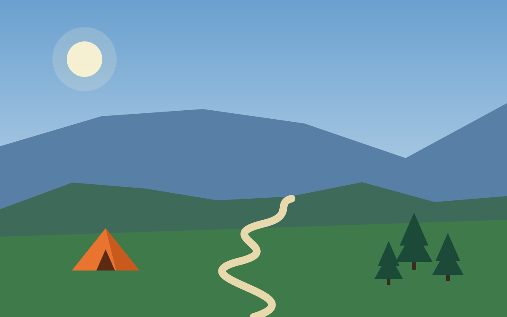
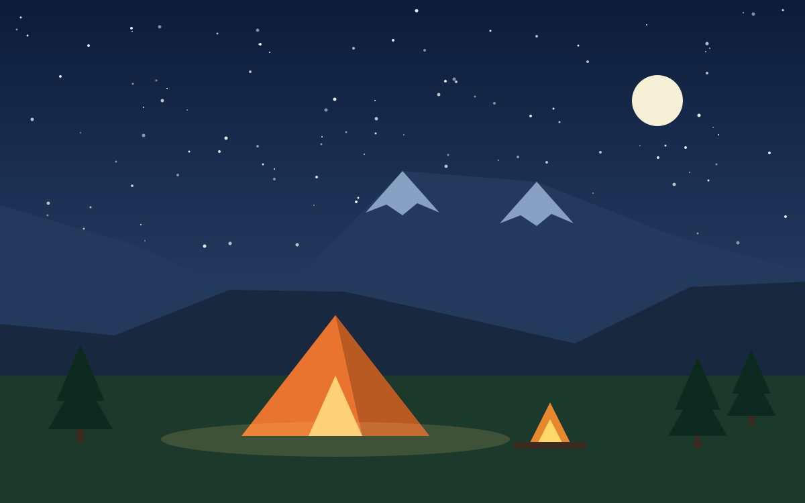
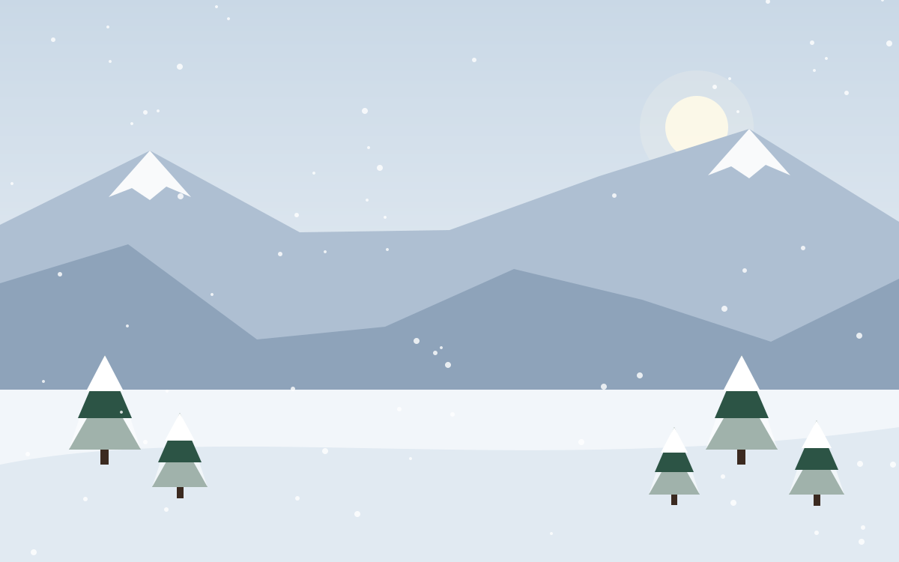

On foot
Hiking & trekking
Discover walks and mountain paths appropriate to your experience and current conditions.
Safety guidance – Hiking & trekkingDiscover Kashmir
Fresh air, scenic trails and memorable outdoor experiences.
Adventure information is illustrative and must be checked against current local conditions.

Discover walks and mountain paths appropriate to your experience and current conditions.
Safety guidance – Hiking & trekking
Enjoy quiet mountain settings only in locations where camping is permitted.
Safety guidance – Camping
Capture alpine lakes, villages, landscapes and natural light responsibly.
See destinations – Photography
Weather and access vary considerably by altitude and season.
Seasonal planning – Seasonal experiences
Observe wildlife and landscapes without disturbing habitats.
Safety guidance – Nature appreciation
Learn from local communities and use authorized guides where appropriate.
Culture & heritage – Local experiences